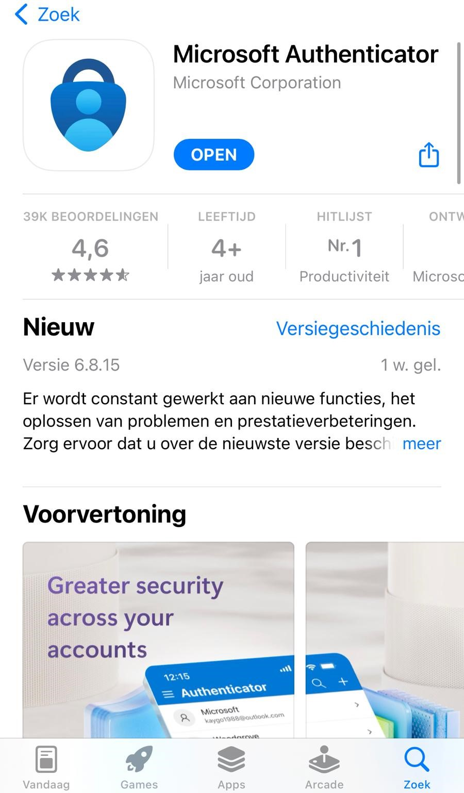

Veilig internetten is niet vanzelfsprekend, maar wel erg belangrijk. Hieronder kunt u een lijst
vinden met 6 maatregelen die u kunt nemen om veilig gebruik te kunnen maken van het internet
1.
Alert zijn
Het is erg belangrijk dat u altijd alert blijft. Klik niet zomaar op linkjes via de e-mail, sms of
social media. Sommige linkjes sturen u door naar nepwebsites. Dit verhoogt de kans dat uw
persoonlijke gegevens zoals uw bankgegevens gehackt kunnen worden.
2.
Sterk wachtwoordbeheer
Gebruik altijd sterke wachtwoorden. Het is handiger als u een wachtwoordzin gebruikt in plaats van een
wachtwoord. Wachtwoordzinnen zijn namelijk makkelijker te onthouden en ze zijn moeilijker om te raden.
3.
Goede antivirussoftware
Kies een goede antivirussoftware. Een goede virusscanner kan u beschermen tegen bedriegelijke websites en software.
4.
Tweefactorauthenticatie
Bij het gebruik van een tweefactorauthenticatie moet u naast een wachtwoord vaak een extra code of app
gebruiken. Meestal ontvangt u de code op uw telefoon of moet u via uw telefoon een app gebruiken. Een
populaire en betrouwbare authenticatie app die u gratis op uw telefoon kunt downloaden is de Microsoft
Authenticator app.

Microsoft Authenticatie App
5.
Apparaten updaten
Het is erg belangrijk dat u regelmatig uw mobiele apparaten update. U kunt hierbij denken aan het updaten
van apps en (mobiele) besturingssystemen zoals IOS en Android. Dit zorgt ervoor dat uw mobiele apparaten
beter beveiligd zijn en moeilijker te hacken zijn.
6.
Back-ups maken
Het is erg handig om overal een back-up van te maken. Door back-ups te maken, heeft u een kopie van uw
gegevens als er iets fout gaat.
Wist u dat ...
Wist u dat uw telefoon en laptop veiliger zijn als u regelmatig updates installeert? Updates bevatten vaak oplossingem voor
beveiligingsproblemen, zodat hackers minder kans hebben om toegang te krijgen tot uw